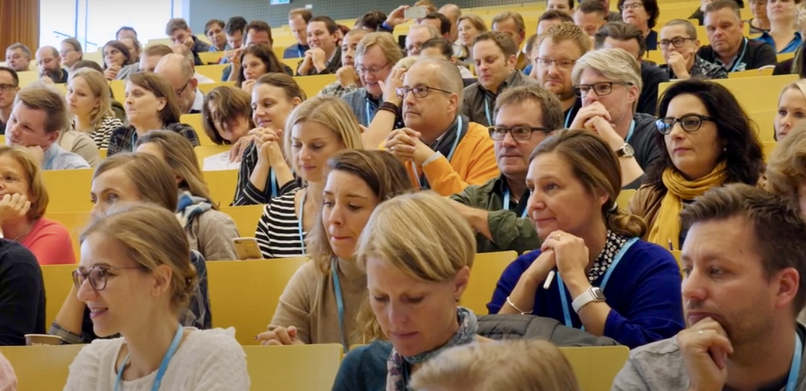
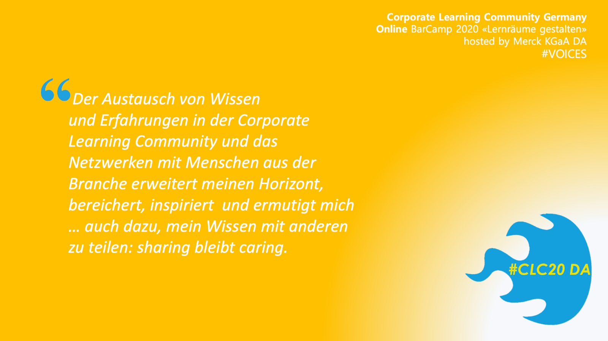
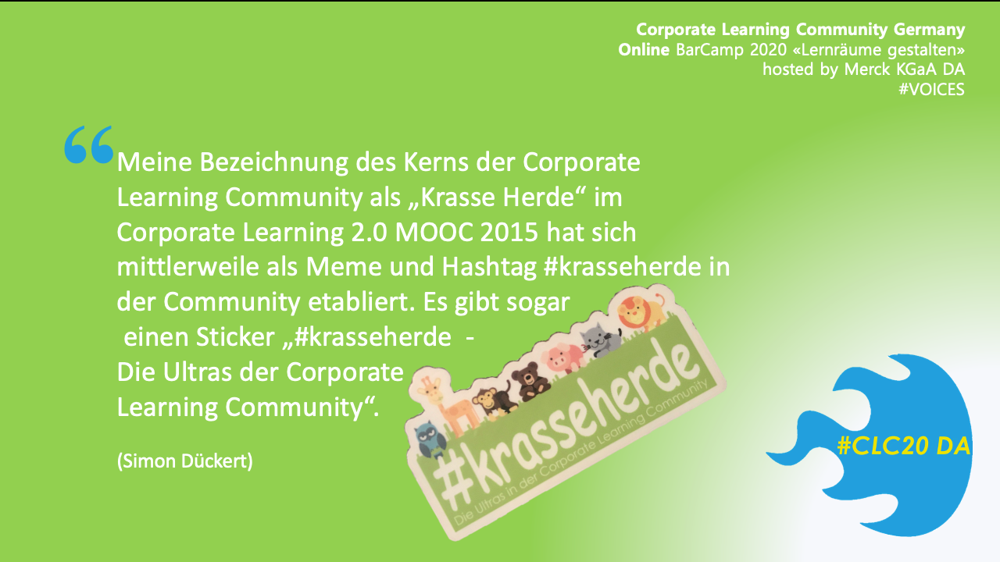
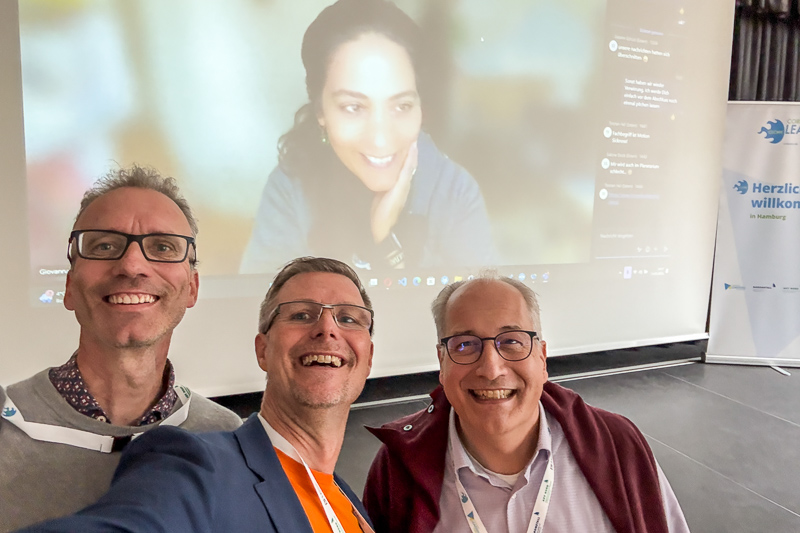

Zwischen Herzblut und Hashtags von lonelylearning zu CLCFour
Zwischen Herzblut und Hashtags -- von #lonelylearning zu #CLCFour
Autorin: Giovanna Lo Presti
Es gibt für alles ein erstes Mal, und dafür gibt es einen perfekten Experimentierraum, die Corporate Learning Community. Genau darum soll es im Folgenden gehen: meine ersten Male in der CLC 2017-2025 bzw. meine Community-Moments, die meine Begeisterung und den Antrieb befeuern, gemeinsam zu wirken und den Raum zu halten, für die Weiterentwicklung unserer Lern- & Wissensgemeinschaft #sharingiscaring.
Mein erster Hinweis. 2017 -- die große Quengelei oder #lonelylearning
Es könnte so 2017 gewesen sein, als ein findiger Vertriebler eines aufstrebenden Online-Learning-Providers in Offenbach am Kaiserlei mit mir in der Hochglanzlobby zusammensitzt und plaudert -- nachdem die Sales-Themen vom Tisch sind. Es geht um L&D-Trends, und ich finde es mehr als blöd, dass mein Horizont mindestens nur bis zur Schreibtischkante und maximal bis zum Headquarter in Korea geht. Bis zu diesem Tag habe ich also keinen blassen Dunst davon, was außerhalb des Hyundai-Universums so abgeht. Ich habe wenig Ahnung von der großen weiten L&D-Welt da draußen, kenne höchstens noch ein paar Fachzeitschriften. Was ist eigentlich state of the art, was machen eigentlich die anderen so ... ich bin quengelig, das Rad neu erfinden zu sollen und irgendwie ohne Anschluss an die Welt da draußen. Kurzum, ich bin so etwas wie ein lonely learner und ein lonely teacher in Personalunion, und während ich meine Situation so an Christian Büttner von GoodHabitz referiere, sagte er den magischen Satz: Kennst du eigentlich die Corporate Learning Community?! Wir sind da Sponsor und ich kann dir den Kontakt vermitteln. Oha! Ich habe alle Antennen auf Empfang!
Randnotiz: die Learning Library von GoodHabitz pilotiere ich, bevor ich absagen muss, um beim Marktriesen einzukaufen. Der Kontakt bleibt und Fortsetzung folgt.

Schon damals sitze ich in der Nähe meiner künftigen WOL-Circler und CLCFour und habe noch keinen Schimmer ... auch spätere Kernteamler und Orgateam-Mitglieder entdecke ich, bin aber nicht ganz sicher, bist du es? Sitze ich da hinter Katrin? Ist das hinter mir Anja? Ist das der ganz hinten Carlo? Tja ... (Quelle: colearn.de)
Mein erstes CLC-Barcamp -- #CLC18
... findet auf dem Unicampus in Kassel statt. Das Thema: „Lernwelten der Zukunft". Schon am Eingang pralle ich am Ende der Schlange ab und lerne Sarah Basniak kennen. Ich sehe zum ersten Mal Charlotte Venema, Karlheinz Pape, Simon Dückert ... Der Spirit steckt mich an. Die nächsten zwei Tage sitze ich mit nahezu 300 Leuten in Sessions, lerne Trainings ohne Agenda von Nadja Petrovskaja kennen, drehe selbst ein kurzes Video. Alles ist Erlebnis, Experimentierraum, Erfahrungsaustausch. Ich bin angezündet -- so ganz ohne Alkohol -- fast. Mein Gehirn ist gedüngt, ich höre zum ersten Mal den Begriff "krasseherde". Von Simon bekomme ich später noch zwei gleichnamige Aufkleber, von denen ich bis heute nur einen aufgeklebt habe und trinke Killepitsch, Kräuterlikör. Wenn ich auf colearn.de stöbere -- eine wahre Schatzkiste --, sehe ich auf Bildern viele Menschen, die ich später noch besser kennenlerne und die schon damals tragende Säulen dieser Gemeinschaft sind.
Auf dem Bahnsteig stehe ich später noch mit Stefan Diepolder, Julia Rack und Steffi Halimi zusammen. Wir sind jetzt ein WOL -- Working Out Loud-Circle und das ist schon der Beginn einer weiteren Lernreise, die uns noch sehr verbinden wird!
Geflasht fahre ich nach Hause, neue Herde gefunden und einer Gruppe in Xing beigetreten (was ist das?). Im April 2020 habe ich sie gegen die LinkedIn Gruppe getauscht, die inzwischen mehr als 11.000 Mitglieder hat und ich bin auf Twitter als \@Frau_Lo, heute nur noch als Observer und Karteileiche. Ich schließe mich der Frankfurter Regio-Community an, lerne Oliver Lorenz, Jochen Robes, Nicola Appel, Annette Sell und noch mehr Menschen kennen, erfahre Lego Serious Play, mache mit -- ich bin so was von dabei und habe das Gefühl, hier bin ich richtig. Der Rest ist Hamburg, Koblenz, Online und hybrid,-- mein erster Promptathon -- und jüngst #CLC25 in Hamburg.
Meine erste CLC Kollegin -- 2019 bei Segula in Rüsselsheim
Einer dieser Abende in der Frankfurter CLC-Community. Ich bin inzwischen Head of L&D eines Unternehmens, dass das Entwicklungszentrum von Opel übernimmt, um es für neue Automobilhersteller zu öffnen. Das erfordert Aufbauarbeit des neuen Standortes, der Infrastruktur und Recruiting mit Betriebsübergang. Ich darf als Head of L&D alles mit aufbauen, auch mein Team. Ich suche Mitstreiter. Angebot und Nachfrage treffen in der regionalen Community #clc069 zusammen. Erstmal lose und mal sehen. Dann hat Annette es tatsächlich gewagt, obwohl auf dem Weg zum Gespräch in ganz Rüsselsheim Schilder hingen, die eher zum Weglaufen einluden: Segula raus. Wir bleiben Opel. Fortan sind Annette und ich ein Team plus ein Werkstudi auf der wahrhaft grünen Wiese.
Wir -- und besonders Annette als „Head of Hub" -- haben das Intranet bzw. Enterprise Social Network -- ESN -- belebt, den Community-Gedanken befeuert, eine Lernkampagne gestartet, Compliance-Trainings eingeführt, Online-Trainings und die Leadership-Konferenz sowie den Day One auf die Beine gestellt und nebenbei noch die Opel-Leute herbei rekrutiert. Also einmal alles.
Bevor ich der französischen Muttergesellschaft ein LMS vorschlage, horchen wir in die CLC und erhalten als Echo Hilfsbereitschaft, Tipps und Erfahrung -- priceless. Wir finden die perfekte Lösung. Finden wir. Meine LMS-Ideen, der Umsetzungswille und ich beschäftigen die Firma noch eine Weile, dann canceln sie das LMS-Projekt und meine Stelle und die meines Vorgesetzten gleich mit. Zum Glück werde ich auf einer Welle der Wertschätzung dort herausgetragen und ich werde nie vergessen, wie mich sogar die Empfangsdame noch herzlichst umarmt. Seitdem habe ich eine Rechtsschutzversicherung. Annette bleibt noch ein bisschen und mindestens bei allem, das mit „Sell" anfängt, denke ich jetzt an sie -- und bei Fleischwurst und Lyoner und bei dem Spruch, „die Welt ist ein Taschentuch". Ironischerweise arbeite ich später in der Lyoner Straße in Frankfurt.
Randnotiz: Ich habe damals mal wieder bei GoodHabitz angerufen und ein Angebot angefordert und mich beeilt dazuzusagen, dass es schon genehmigt ist. Wir haben direkt die Online Library implementiert, mit Unterstützung der super Lerncoachin Julia, die ich aus meinem ersten WOL-Circle kenne und so gerne mit ihr arbeite. So kreuzen wir im Laufe der Zeit Lebensläufe und Karrieren.
Mein erstes Mal im Orgateam -- 2020/ Pandemie #CLC20 DA, hosted by Merck in Darmstadt
Es ist ein unfreiwilliges Online- statt einem Hybrid-Barcamp. Karlheinz kann auf eine besonders ruhige Art sehr überzeugend sein, wenn Hände für das Orgateam gebraucht werden. Wir planen zunächst mit dem Merck Innovation Center und können es dann doch nur virtuell betreten. Pandemie-Power im Orgateam. Mein Aufgabenschwerpunkt ist Marketing, und ich poste auch auf LinkedIn regelmäßig Voices aus der Community.


Aus den Marketingaktivitäten entsteht ein kleines Interview-Video mit Karlheinz, das einen Waldspaziergang simuliert. Ich bin heute nachsichtig mit meinem damaligen Ich, denn ich habe viel gelernt. Der Ton ist mies, das Bild mittelmies, im Gegensatz zu den Antworten von Karlheinz, der wie immer ruhig, geduldig und klar spricht.
Inhaltlich gibt er einen kurzen Einblick in die Anfänge bei der CLC, die aus regelmäßigen Treffen von Trainingscenterleitern der Hessenmetall ab 2007 entstanden sind. Das erste Camp organisieren Charlotte und Karlheinz bereits 2011. Inzwischen reichen die Aktivitäten über die ganze DACH-Region. Die CLC hat sich vorgenommen, Lernen in Organisationen grundlegend zu verändern, und zwar hin zu mehr selbstgesteuertem Lernen. Als Netzwerk lebt die CLC immer von der Aktivität der Mitglieder, und deren großes Engagement lässt sich unter anderem auch an den derzeit 17 Regiocommunities ablesen. Gleichzeitig sind wir auch ein Experimentierraum, das prägt Kompetenz aus und gibt z. B. Sicherheit vor der Implementierung im Unternehmen. Für die Gestaltung der Lernräume hat die Pandemie die Erkenntnis beschleunigt, dass Online-Formate sehr wohl funktionieren und auch Vorteile mit sich bringen, wie z.B. asynchrones Arbeiten.
Visualisierung
... ist das Thema der Stunde beim Barcamp in Darmstadt 2020. Viele Sessions sind als Sketchnote dokumentiert -- und natürlich gab es auch eine Session von Karl Damke und Simon Dückert zu Sketchnote-Basics -- der lernOS-Leitfaden Sketchnoting ist, neben vielen anderen wertvollen lernOS-Themen, online über die lernos.org Seite verfügbar. Die Cocktailkarte für Barcamper und Drin(k)fluencer für das virtuelle Abendevent, das ich an meinem iPad gescribbelt habe, hat mir einen Heidenspaß gemacht. Learn on the beach und der MacherInnenMule, der Whiteboard Russian oder der Sketchnote Sour sind ganz mein Ding.

Meine erste Keynote -- L&Dpro in München 2021
Ich weiß nicht mehr, wie-warum-weshalb mir damals Monika Schädel vom HRM Institut in Mannheim anbietet, eine Keynote auf der L&Dpro zu halten. Ich habe einfach zugesagt. Wen treffe ich in München beim Vorabend-Dinner im Restaurant „Der Dantler" unter anderem: Karlheinz und Simon! Ich habe lange an meiner Keynote gearbeitet mit dem Titel „Lead like liquid", in der Wasser als Metapher für Leadership steht und insgesamt 10 Eigenschaften abbildet und ich stehe voll dahinter, doch jetzt geht mir doch ganz schön die Düse. „Wenn Caren Miosga von Karten ablesen kann, dann darfst du das auch!", sagte Simon zu mir auf dem Weg zum Hotel. So freaking true! Den Satz habe ich mir gemerkt. Danke dafür. Den brauche ich hin und wieder. Nach meiner Keynote bin ich zum CLC-Stand bei Karlheinz und Simon auf der CLC-Homebase „eingekehrt", wo ich auch Oliver Ewinger traf, mit dem ich viel gute Zeit dort verbracht habe.
Das Jahr darauf habe ich dort das erste Zusammentreffen meines neuen Teams bei der PAYONE geplant und sie mit der Barcamp-Area vertraut gemacht. Sie finden das nett, und ich bin ein bisschen enttäuscht, dass es nicht wahnsinnig zoom-peng-klack-boing gemacht hat. Aber klar, wir haben ja kein Barcamp besucht, sondern eine Messe.
Wenn ich jetzt den Job wechsle, treffe ich sie hoffentlich künftig in der Regio-Community #clc069.
Mein erster lernOS Leitfaden -- 2021plus
Ende 2021. Irgendwie habe ich in meinem neuen Job das Gefühl, ich brauche mal einen Circle zu Leadership. Felix Harling hat den gleichen Gedankengang und plant einen Circle zum Thema -- zack -- bin ich im Autorenteam mit am Ende sieben anderen. Mein erstes Projekt mit Pivi, die z.B. schon den Diversity lernOS-Leitfaden geschrieben hat. Auch Marianne kenne ich aus dem Orgateam. Die anderen Mitautorinnen Sara, Dörte, Johanna und Claudia kenne ich lange nur online, Claudia erkennt mich ein Jahr später auf der Copetri. Eine Reise, eine Erfahrung. Pilotphase mit ca. 90 Leuten über LinkedIn in 2022 und jede Menge Resonanz und Rückmeldung zwischen Impfarmen und Lektorat, einer Lunch & Learn-Session und Abschluss des Piloten Ende April.
Das bringt mir einen Podcast-Termin bei Unboxing Agile mit Daniel Räder zum Thema Peerlearning ein. Mit Sara Parr mache ich später einen Tandem-Piloten, das verbindet uns.
Gegen Ende und nach dem Piloten hängen wir ein bisschen durch mit unserem Projekt, manchmal kommt das Leben dazwischen: Umzug, Sabbatical, Jobwechsel, Corona, ein paar Klippen, die wir noch umschiffen, z. B. eine namens Github, dann ist das Ding online. Dank tatkräftiger Unterstützung von Simon und dem langen Atem von Felix, wenn es um die Finalisierung beim Hochladen 2023 geht. Eins ist klar, bei so einem Projekt entsteht viel mehr als nur ein Guide. Später habe ich den Leitfaden als Basis für meinen Leadership Circle bei PAYONE herangezogen und mir ein wenig zurechtgezupft -- Corporate Peerlearning, das ist eine andere Session. Beim nächsten Camp? Wer hat Interesse? Es ist auch eine Keynote und ein gemeinsamer Vortrag mit Herwig in 2025 und das hängt hiermit zusammen:
Mein erster „offizieller" Posten -- 2025
Eine Mail von Karlheinz, 11.11.2024. Beim zweiten Mal hinsehen: ist ja gar kein Newsletter, ich soll ihn zurückrufen. Äh, ich, ach, oha! Karlheinz organisiert seine Nachfolge, es soll ein Viererteam sein, drei sind schon nominiert. Wir telefonieren, wir sollen uns zu viert treffen, mal sehen, ob wir uns grün sind. Sind wir. Ich stecke schon wieder in so einer Art Abenteuer habe ich den Eindruck, kann mir bitte jemand eine To-do-Liste zustecken?! Das Barcamp rollt schon an, es gilt trust the process. CLCFour, wir treffen uns in Frankfurt bei der PAYONE zum CLCFour-Kickoff. Herwig kommt aus Österreich, Harald aus Bayern und Martin aus der Schweiz. Kein Geruckel, wir fangen einfach an, gemeinsam machen wir uns auf den Weg. Ich fühle mich in bester Gesellschaft mit diesen Weggefährten. Ab jetzt treffen wir uns jedes Jahr woanders und wir sind wöchentlich im Kontakt -- und wir haben zu tun. Wir bekommen von Silvia und Simon ein Expert-Debrief von Karlheinz. Harald hebt uns auf die Nextcloud. Wir gehen zum Notar.
Bereits rückwirkend zum 1.7.2025 sind Harald Schirmer und ich offizielle Geschäftsführer der Corporate Learning Community gUG und Herwig Kummer und Martin Geisenhainer sind neue Gesellschafter der gUG und übernehmen damit Karlheinzs und Charlottes Anteile. Wir sind die CLCFour. We hold the space, und wir arbeiten mit Kernteam und Gesellschaftern -- und allen, die #einfachmachen und #bescheidsagen.
Am 28.8.2025 erfolgt der Handelsregistereintrag am Registergericht Frankfurt. An meinem Geburtstag macht die Notarin den Eingangsstempel drauf, kann ja nur gut werden.

Mitte Juli. Eben waren wir noch bei der Notarin in Nürnberg, Karlheinz und ich, wir haben noch ein bisschen wertvolle Zeit verbracht. Leider konnte Harald nicht am gleichen Tag dabei sein (Quelle: Giovanna Lo Presti)
Es ist schon August 2025, wenn ich das schreibe: Die Strategie, die wir finalisieren, der Draft von Harald, in den die CLCFour-Überlegungen, die Ergebnisse aus den Zukunftskonferenzen, dem Barcamp mit eingeflossen sind, die Abstimmungen mit dem Kernteam und die Absicht, neue Zielgruppen zu erschließen und uns dafür auch ein bisschen frischer zu präsentieren -- ein Fresh-up, man würde sagen, ein bisschen Wangenrot? Kein Botox, nur ein sanftes Peeling. Daran arbeiten wir und ich freu mich schon. Stay curious -- kann man das heute noch schreiben oder ist das schon cringe?
Mein erstes Barcamp als CLCFour: Hamburg -- #CLC25 im März
„Mehr Intelligenz ins Lernen" ist das Motto 2025 an der beruflichen Hochschule in Hamburg. Vor allem ist es das vermutlich letzte Barcamp mit Karlheinz. Die CLCFour und er -- das bedeutet eine Veränderung. Abschied und Aufbruch. Jetzt ist es für alle sichtbar. Karlheinz verabschiedet sich, wir alle verabschieden ihn mit standing ovations. Die können gar nicht lang genug sein. Der Wegbereiter, Ermutiger und Vormacher übergibt an uns, die Weitermacher. Und wenn hier kein weiteres Loblied auf ihn folgt, dann, weil es bereits eines gibt, der Platz nicht reicht und meine Worte vermutlich auch nicht.
Thefutureisnow. Auf dem Barcamp in Hamburg gab es, neben KI-Input auch
Sessions wie „TikTok trifft Tageszeitung" von Eleonora. Wie lernen die jüngeren Zielgruppen, wie funktionieren die, wo sind sie zu erreichen? Kritisch schauen wir uns um und an, betrachten die Haarfarben. Wir überlegen, wie müssen sich Lernangebote verändern und was macht uns als Community attraktiv für junge Personalentwickler und alle, die mit Corporate Learning zu tun haben? Nur Format & Relevanz? Die Session, quo vadis CLC hat die Komplexität der Ergebnisse der Zukunftskonferenzen noch einmal zutage gefördert: Nicht auf einen Blick erfassbar, aber auch hier ist klar, Verjüngung und Zukunft sind verzahnt. Es gibt viel zu tun ... und jeder darf, kann, soll, der will.
Ist ja auch logisch, Gen Z, Alpha Beta etc. ist nach den ersten zwei Minuten des Filmklassikers „Spiel mir das Lied vom Tod" garantiert auch zu Tode gelangweilt. Schnellere Einstellungen, schnellere Schnitte, schnellere Info auf den Punkt gilt für fiktionale und non-fiktionale Formate. Seh- und Lerngewohnheiten, Hirne verändern sich, und damit neuronale Trampelpfade auch. Naja, andere Session.
Dieses Barcamp ist: voll -- voller Sessions, Begegnungen, Wiedersehensfreude, Emotionen und gutem Essen. Endlich wieder ein echtes Camp mit vielen Menschen vor Ort und online. In Hamburg hat Jochen auch die Session zur Buch-Idee gepitcht.
In meine Richtung fallen am ersten Tag Sätze wie, „Fühl dich nicht als Quotenfrau", und „Wir fühlen uns von dir gut vertreten", das hat mich berührt. Ich bin froh, dass die CLCFour nicht den Text mit den alten weißen Männern hören muss.
Am zweiten Tag fahre ich schweren Herzens zurück und bin online dabei, weil ich die kollegiale Fallberatung nicht im Zug moderieren will. Begeistert von der hybriden Technik. Hut ab. Ehrlich. Die beste hybride Veranstaltung ever -- neben der loscon.

Danke auch Nordmetall. Danke Henning, für's Hosten und die super Moderation, danke an das großartige Orgateam auch für die tolle Fluglotsen-Idee, die mein Hirn immer wieder zutage fördert, wenn jemand fragt, „wo ist ...". Film und Hut ab.
Wir werden noch viele gute Ideen umsetzen, wir alle. Abseits von Rollen, jede einzelne Person, die sich engagiert und sichtbar wird. Das ist unschätzbar substanziell, #machhalt. Ich bin dankbar für die tollen Leute, auf die ich hier treffe. Und wir, die vier, haben unsere Arbeit aufgenommen. Ehrenamt, Hintergrunddienst. Oder Dugnad würde Anders Indset sagen, der mich bei einem Vortrag sehr beeindruckt hat und mir vorne in sein Buch, Der Wikinger Kodex, schrieb: hej Giovanna, bereit für den Dugnad? Offenbar. Auch wenn das ohne Ehre und ohne Amt ist und alle mitmachen.
Randnotiz: Dugnad ist eine norwegische Tradition, gemeinschaftlich, freiwillig, zum Wohle aller bzw. einer Gruppe oder Person. Anders Indset bezeichnet es als Ehrenamt ohne Ehre und ohne Amt, z.B. in seinem Buch, „Der Wikinger Kodex".
Und jetzt? Ein erstes Inspire & Network mit Oliver
... und die Freude auf alles, was da kommt. Eine Keynote und dann noch eine. Ich teile alles, was ich weiß und kann. Egal ob Messen, Conventions, Camps, es geht um Menschen und um relevante Inhalte, alles ist Lernen #everythingwedowelearn. Als Social Animal sind Netzwerke, Wissen und Neugier mein Treibstoff, den trage ich in meinen Job -- auch in Form von Büchern, wie neulich „Lernmythen aufgedeckt" von Yvonne Konstanze Behnke, der ich auf der LEARNTEC über den Weg gelaufen bin, habe ich mir gleich besorgt und es nicht bereut.
Und die Moral von der Geschicht' ... nicht Netzwerken lohnt sich nicht. Zusammen geht es besser. Ich fühle mich gut vernetzt. Diese starke Community gibt mir Energie, Sicherheit und mehr Selbstbewusstsein weil ich immer weiß, ich habe mehr als einen Telefonjoker und wir helfen und unterstützen uns gegenseitig. Das liebe ich. Dafür setze ich mich ein. Dann ist es o. k., als Individuum nicht alles wissen zu können und nicht überall dabei zu sein. Das habe ich mir inzwischen abgeschminkt. FOMO auch. Ich mach einfach.
Ich bin dankbar für gestern und zuversichtlich für morgen.
#everythingwedowelearn #nolonelylearners #heimatCommunity #CLCFour #dieweltisteintaschentuch #lernenliebtwissen #neugieristmeintreibstoff #macheinfach-undsagbescheid